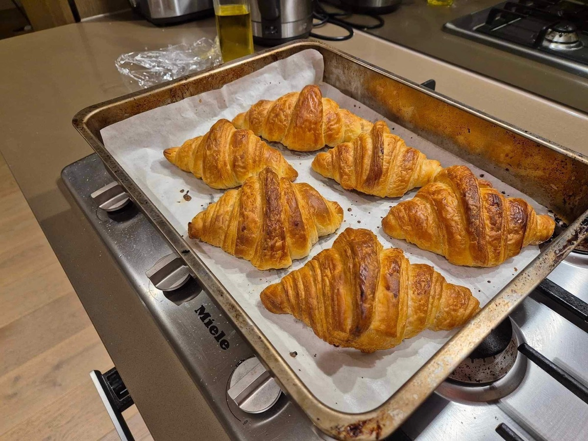
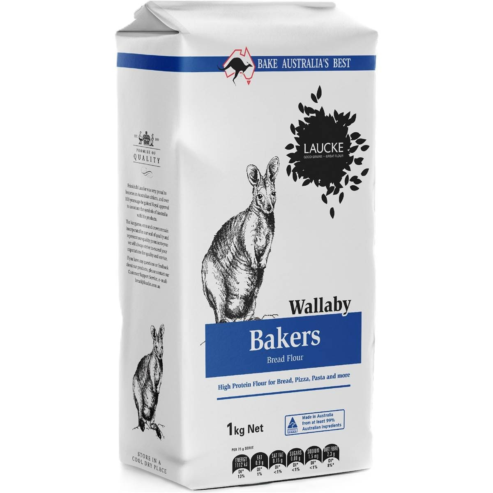

Croissants
Flaky, buttery croissants laminated by hand over two days, with a honeycomb crumb inside.

Flaky, buttery croissants laminated by hand over two days, with a honeycomb crumb inside.

500g bread flour 305g unsalted butter: 25g soft for the dough, 280g cold for the block
305g unsalted butter: 25g soft for the dough, 280g cold for the blockThe butter and dough need to be the same firmness when you roll. If the butter cracks, let it sit out for a few minutes; if it starts to smear, put everything back in the fridge.